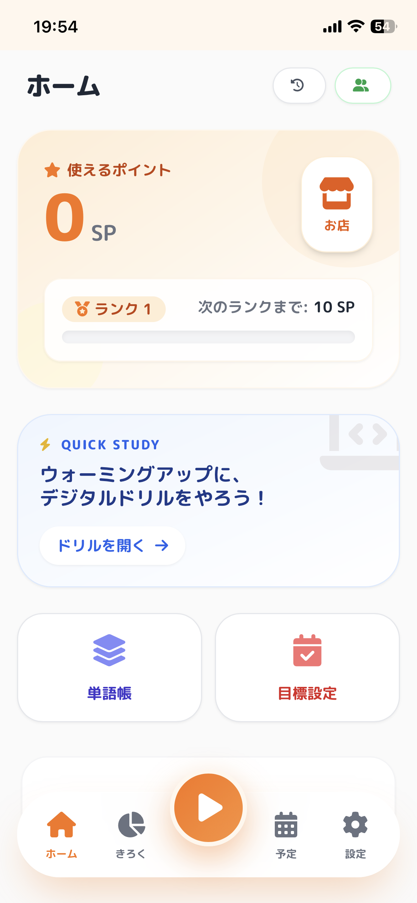
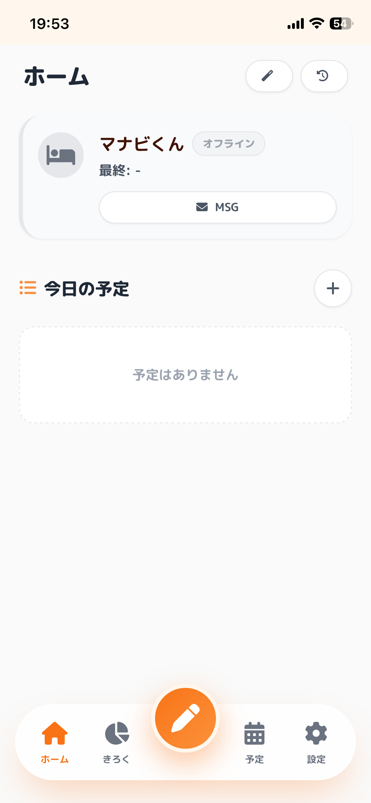
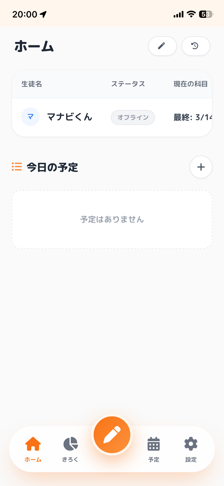

Manabi Baton
日々の学習記録をバトンのようにつなぐ。
モチベーションを維持しながら、あなたのペースで目標へ近づくための学習管理アプリです。
3つの特徴
サクッと記録
勉強した時間や内容を、シンプルで直感的な操作で素早く記録できます。毎日の負担になりません。
バトンをつなぐ
昨日の頑張りを今日の自分へ。継続するほどバトンがつながり、目に見えて達成感を感じられます。
振り返りで成長
積み重ねた記録はグラフやカレンダーで確認。自分の成長が一目でわかり、モチベーションが途切れません。
アプリ画面のイメージ
スマホやタブレットで快適にご利用いただけます



さあ、学びのバトンをつなごう
ブラウザからすぐに始める※インストール不要。ブラウザ上で動作するWebアプリです。